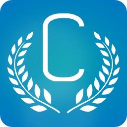

C.A.E.S.A.R
Création Assistée pour l'Edition et la Simulation d'Algorithmes Robotiques
Version 1.0
Copyright (C) Université du Maine (2013)
Idée originale
Jérôme LEHUEN
Auteurs de l'application
DUROY Adrien
ANDRU Bastien
GOSSELIN Quentin
DELORME Guillaume
DETAN Nicolas
PARWANY Zubair
CHOUKET Houda
AUBRY Bastien
BESNARD Vincent
MELNYCHENKO Ivan
Contributeurs
MARTIN Gwendal
SAGOT Raïssa
CHARTIER Christophe
Licence
Ce logiciel est un programme informatique servant à construire un programme
pour un robot NXT et à effectuer une simulation de l'exécution de ce dernier.
Ce logiciel est régi par la licence CeCILL soumise au droit français et
respectant les principes de diffusion des logiciels libres. Vous pouvez
utiliser, modifier et/ou redistribuer ce programme sous les conditions
de la licence CeCILL telle que diffusée par le CEA, le CNRS et l'INRIA
sur le site "http://www.cecill.info".
En contrepartie de l'accessibilité au code source et des droits de copie,
de modification et de redistribution accordés par cette licence, il n'est
offert aux utilisateurs qu'une garantie limitée. Pour les mêmes raisons,
seule une responsabilité restreinte pèse sur l'auteur du programme, le
titulaire des droits patrimoniaux et les concédants successifs.
A cet égard l'attention de l'utilisateur est attirée sur les risques
associés au chargement, à l'utilisation, à la modification et/ou au
développement et à la reproduction du logiciel par l'utilisateur étant
donné sa spécificité de logiciel libre, qui peut le rendre complexe à
manipuler et qui le réserve donc à des développeurs et des professionnels
avertis possédant des connaissances informatiques approfondies. Les
utilisateurs sont donc invités à charger et tester l'adéquation du
logiciel à leurs besoins dans des conditions permettant d'assurer la
sécurité de leurs systèmes et ou de leurs données et, plus généralement,
à l'utiliser et l'exploiter dans les mêmes conditions de sécurité.
Le fait que vous puissiez accéder à ce texte signifie que vous avez
pris connaissance de la licence CeCILL, et que vous en avez accepté les
termes.
Licences associées aux composants
NXTIM est une partie du code de CAESAR distribuée sous la licences CeCILL-C.
Le Look & Feel "Synthetica" est utilisé grâce à une licence Open source au nom de Bastien Andru
Certaines icônes par Yusuke Kamiyamane (p.yusukekamiyamane.com). Tous droits réservés. Utilisation autorisée sous Licence Creative Commons Paternité 3.0.
Autres informations
Application librement inspiré du logiciel Scratch développée par le Groupe de Recherche Lifelong Kindergarten auprès du laboratoire Média du MIT
Réalisé de le cadre des Projets Tuteurés 2012 et 2013